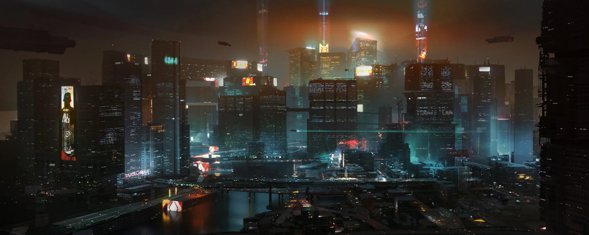
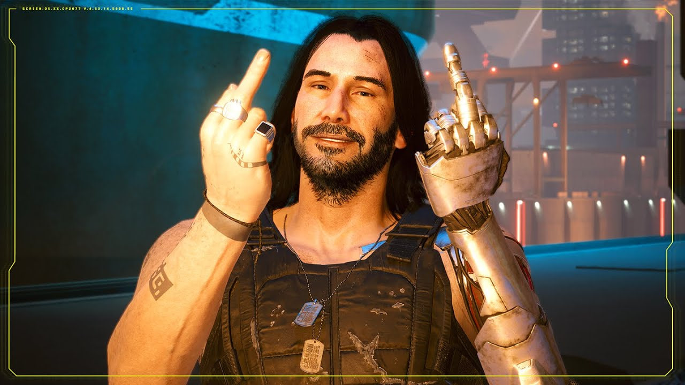
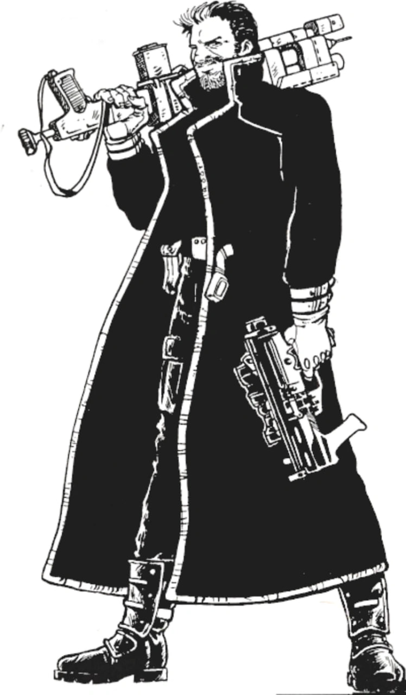
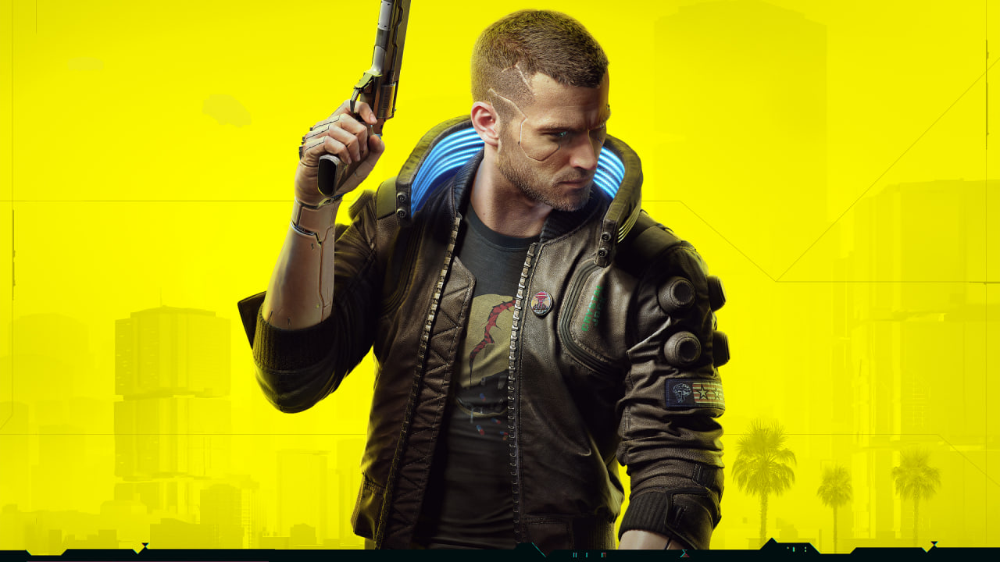
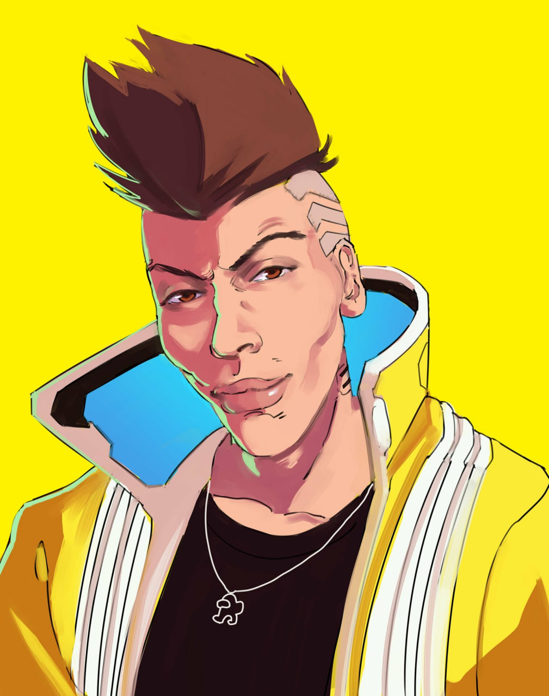
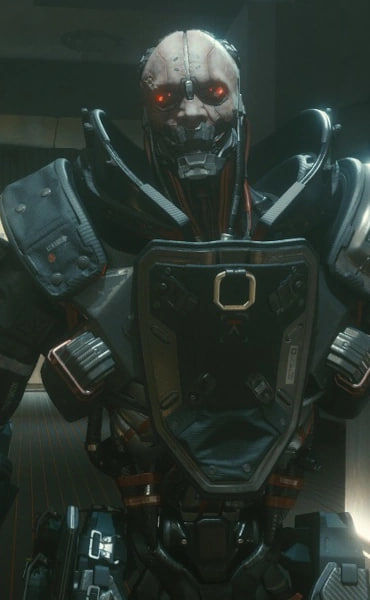
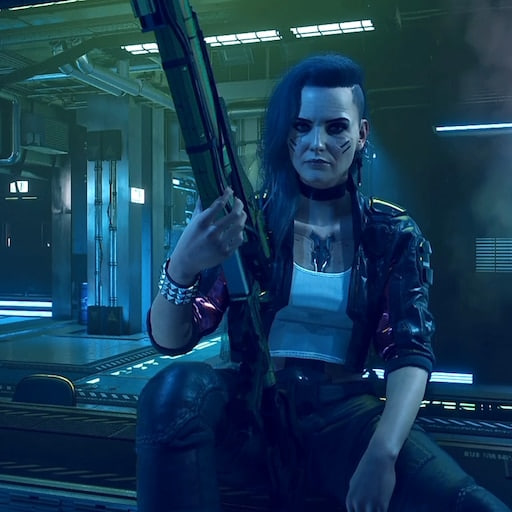
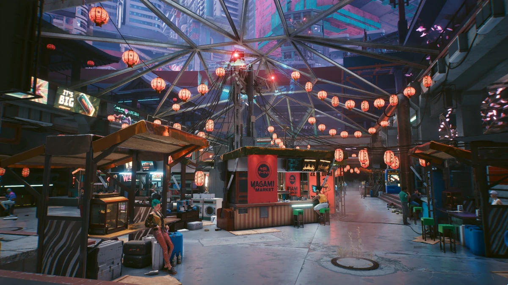
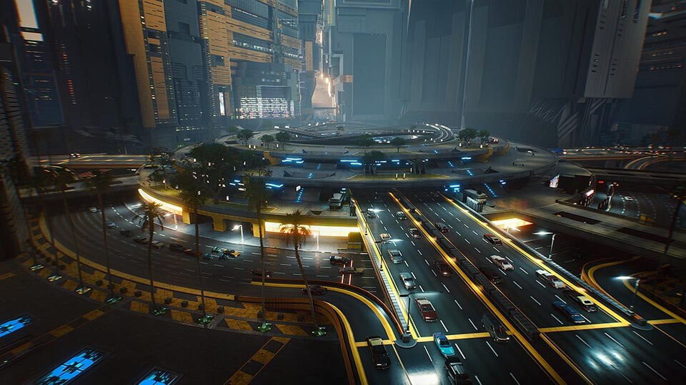
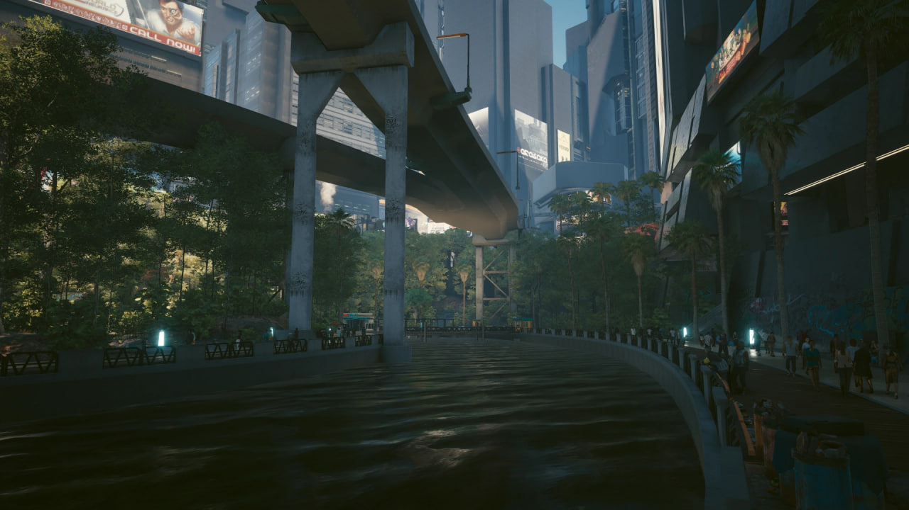

Доброе утро, Найт-Сити! Вчерашний подсчёт трупов закончился на крепкой тридцаточке! Спонсор десятки — нестихающие уличные войны в Хейвуде! Минус один коп, так что все готовьтесь!
Найт-Сити был основан Ричардом Найтом в 1994 году как Коронадо-Сити. Найт мечтал создать идеальный город, свободный от коррупции старого мира и корпоративного влияния. Однако его мечта превратилась в поле битвы для мегакорпораций, которые увидели в новом городе идеальный плацдарм для своих операций вне юрисдикции национальных правительств.
После трагического убийства Ричарда Найта в 1998 году город был переименован в его честь. В последующие десятилетия Найт-Сити пережил власть мафии, жестокие корпоративные войны и даже ядерный взрыв в 2023 году, устроенный Джонни Сильверхендом в попытке уничтожить башню Арасака. Этот акт терроризма навсегда изменил облик города, превратив центр в радиоактивную пустошь на десятилетия.
К 2077 году Найт-Сити восстал из пепла, став независимым городом-государством на границе Северной и Южной Калифорнии. Это символ безудержного капитализма, где технологии переплетаются с нищетой, а жизнь человека стоит меньше, чем киберимплант в его голове. Город разделен на районы, каждый из которых контролируется различными бандами и корпорациями, создавая уникальную экосистему насилия и возможностей.







Ричард Найт основывает Коронадо-Сити при поддержке корпораций Petrochem, Arasaka и EBM.
Ричард Найт трагически погибает в возрасте 44 лет от падения со своих апартаментов в центре города. Корпорация "Найт", основанная им же, принимает на себя управление городом и переименовывает его в честь своего отца-основателя.
Четвёртая корпоративная война, бушевавшая по всему миру, унесла бесчисленное множество жизней. И закончилась такая война - как и ожидалось - ядерным взрывом. Но не в каких-то пустошах Мексики, или какой-нибудь стране третьего мира, нет. Это произошло в Найт-Сити: Джонни Сильверхенд со своей командой устроил теракт с применением ядерной бомбы прямо в сердце города, уничтожив Арасака-тауэр и весь центр города.
Несмотря на прошедшие годы и корпоративные войны, а также войны банд, Найт-сити раз за разом восстанавливается. В основном ему с этим помогают кочевники - люди, что не имеют одного места жительства, и кочуют по пустошам огромными семьями. Главную роль в восстановлени сыграл клан Альдекальдо.
В 2070-ых, во время объединительной войны, Найт-Сити удалось отстоять свою независимость от НСША благодаря вмешательству корпорации "Арасака", которая вернулась в город.
За несколько часов в Компэки-плаза произошло то, что навсегда изменило мир: Сабуро Арасака был убит своим собственным сыном, а Ви со своим лучшим другом Джеки украли биочип с энграммой(копией сознания) Джонни Сильверхенда.


